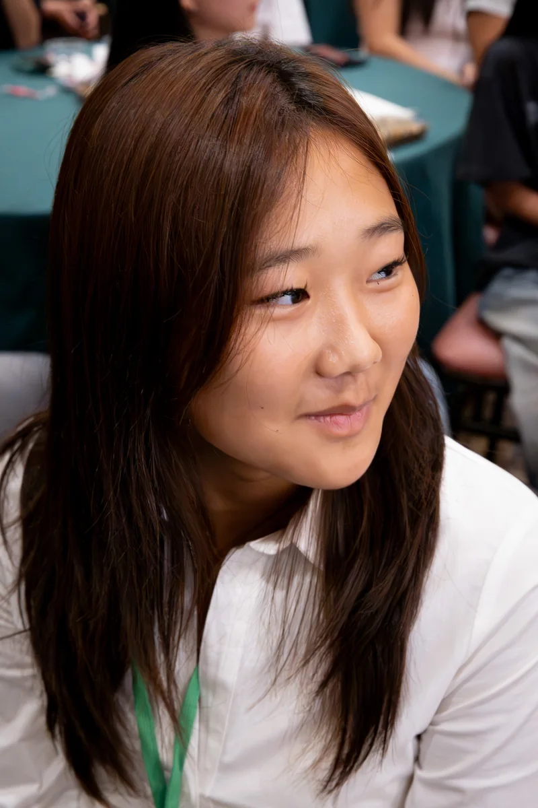
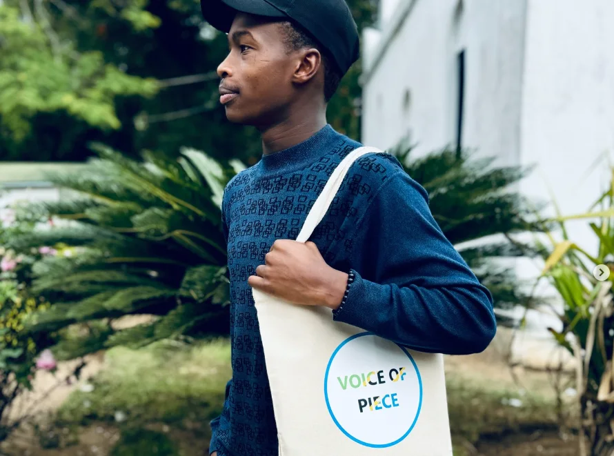
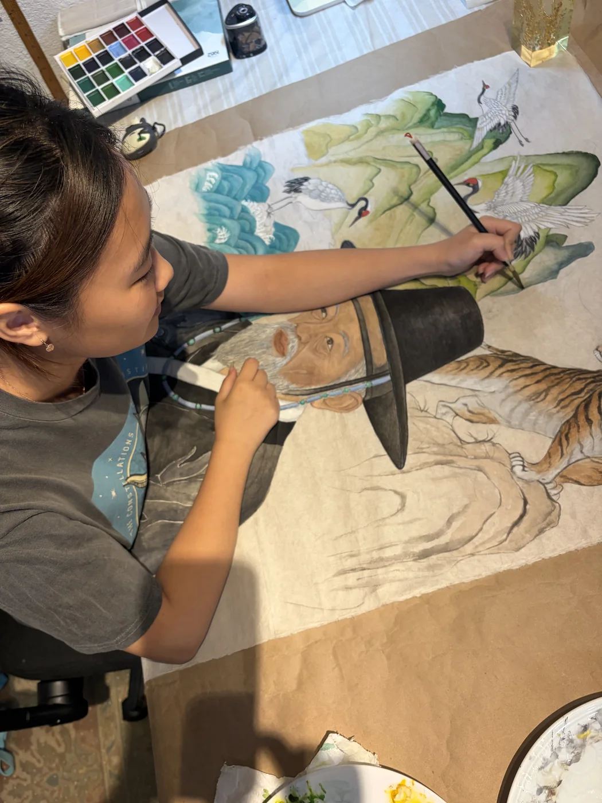
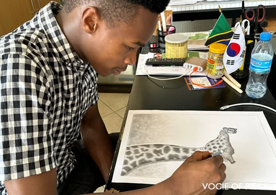
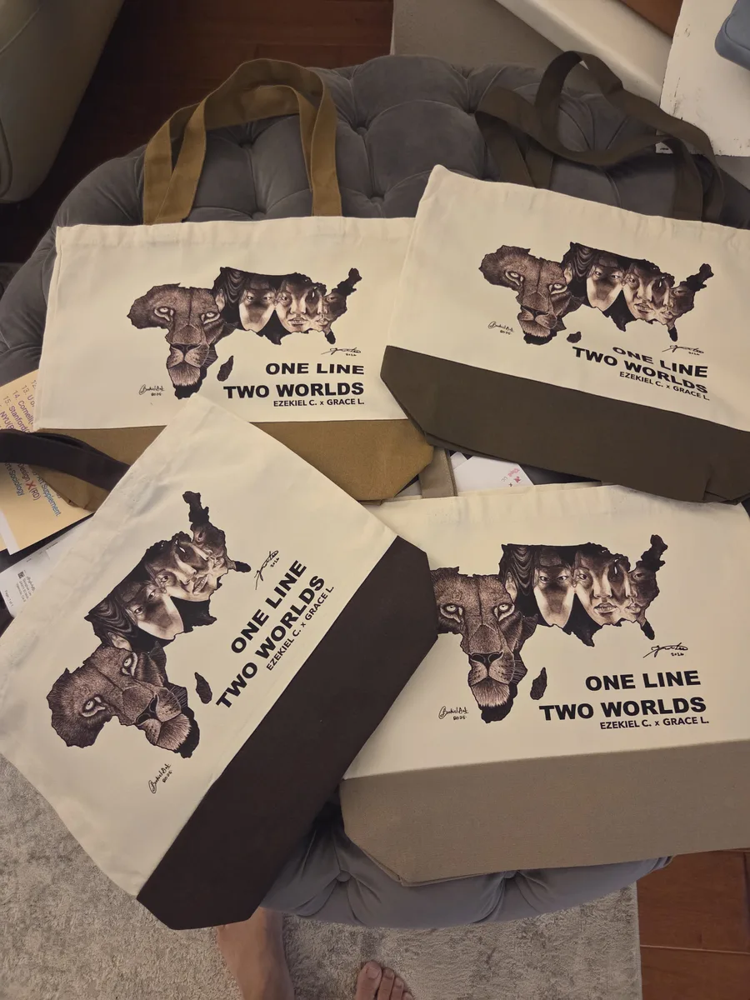
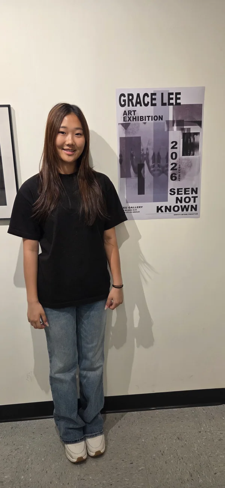

A REAL COLLABORATION
One Line,
Two Worlds.
Grace Lee × Ezekiel Charles Loishooki
LOS ANGELES, USA ↔ TANZANIA
Ezekiel’s lion takes the shape of Africa. Grace’s overlapping faces inhabit the outline of the United States. In One Line, Two Worlds, their distinct ways of seeing meet in one composition.


THE QUESTION CHANGES
We had tried to show the artwork.
We had never helped the artists meet.
Grace saw something different in Ezekiel’s work: not an image to promote, but a person she wanted to create with. That shift—from artwork to artist—opened a direction Voice of Piece had never imagined.


“We created something new without changing or taking away from the original meaning of either artwork.
GRACE LEE
THE THIRD WORK
Neither one erased.
Something else born between them.
Ezekiel’s lion carries a sense of home and identity. Grace’s faces explore how identity changes through time and experience. The shared composition brings these ideas together while preserving the meaning of each original work.
CREATION NEEDS MORE THAN INSPIRATION
The promise became
part of the artwork.
Credit, permission, authorship, compensation and future use were discussed across English, Korean and Kiswahili. The agreement was not paperwork after the art; it was how the artists protected one another while making it.


THE ORIGIN OF ARTBRIDGE
The meeting revealed new questions: How do artists find one another? How can meaning cross languages? How can a shared work protect both names, both voices and both futures? ArtBridge grew from those questions.